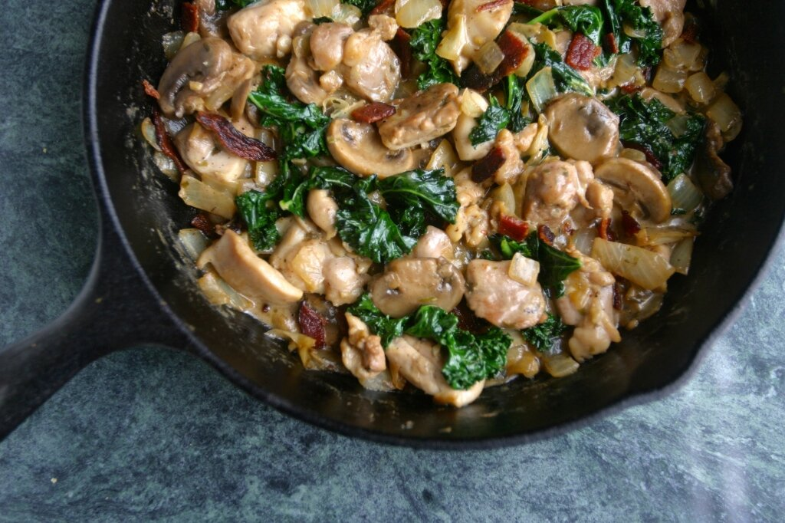

All eyes on...[1]
I've been doing a lot more blog browsing lately rather than Instagram perusing. I don't know about youuuuu buttt.. it's really hard to save Instagram recipes/posts you like. I lose them. Instantly. I screenshot them, then they get lost in the thousands (literally thousands) of food pictures I have on my phone. BUTTT... On the internet blog space world place, you've got the power of bookmarks!! *jazzhands* It keeps things so nice and neat and organized. I love it lately. I've got quite a collection of recipes I've got my eyes on to make in the near future, and I want to share them! Maybe you'll find something you like too. I'd like to turn this into a series of posts as I explore & discover new recipes. I'll probably share both vegan & non-vegan stuff because a lot of the time I find non-vegan or non-healthy stuff and just tweak it to my liking. So there should be a nice array of posts for anybody to enjoy. :) Here we go!

[ via primalbitesblog.com ]
this bakery style cheese danish. and there's a vegan version!
this general tso's cauliflower. oh. baby.
these fig tahini cookies. figsssss.
this taco-meat stuffed delicata with an avocado cream. omg delicata.
these vegan sweet potato biscuits. it's like i'm back in georgia.
these plantain english muffins. plantains are underrated!
this chicken bacon ranch skillet. sub tofu for meeee and omg yes.
these 4-ingredient apple pie blondies. blondies? i'm down.
this kabocha squash lentil curry. my two favorite things: kabocha and curry.
this oreo rice. okay i'm guilty of already making this. so not healthy but omg.
this homemade aloo gobi. my fave indian dish!
this 30-minute pizza crust. doughhhh. *heavy breathing*
these whole wheat pumpkin puffs. so taunting.
[ this is everything I currently have my eyes on. leave any links you're currently loving, below! ]